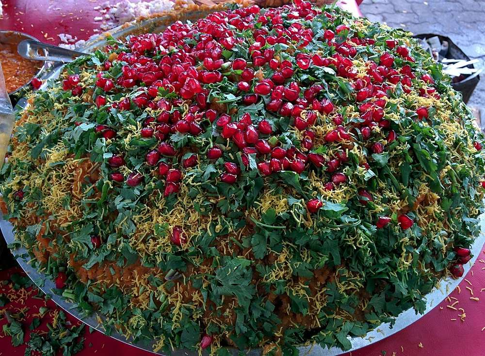
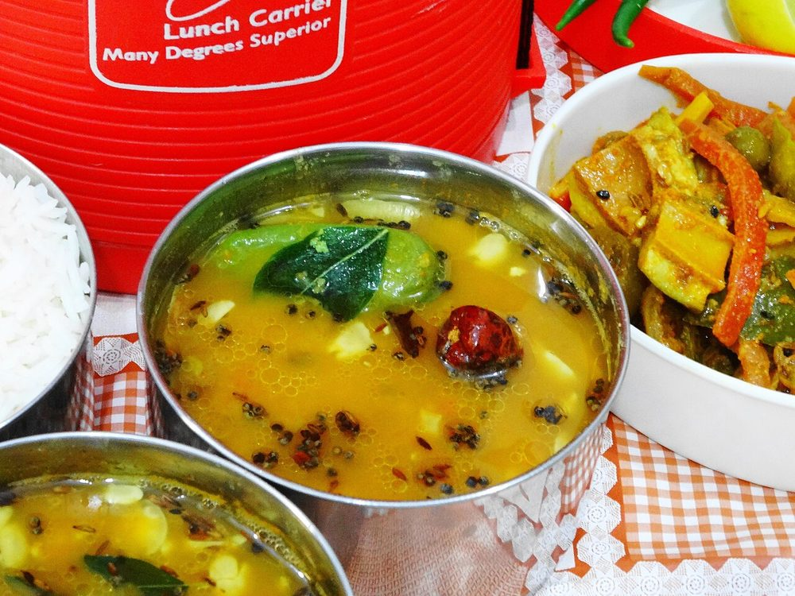
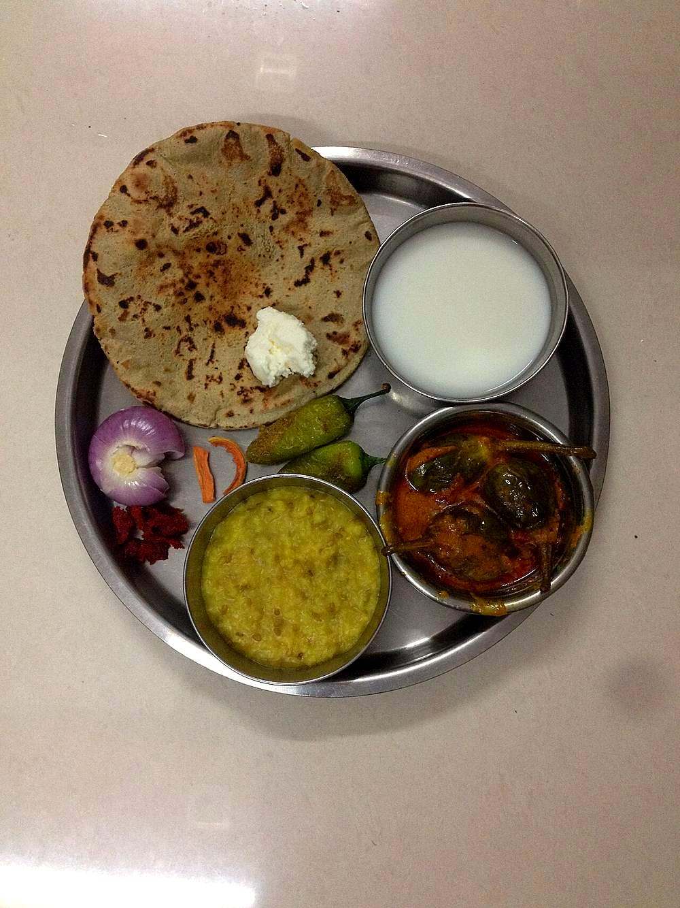

West India
Gujarati Cuisine
India's great vegetarian tradition, where sweet, salty, and sour are balanced deliberately on a single plate.
India's great vegetarian tradition, where sweet, salty, and sour are balanced deliberately on a single plate.
Gujarat has been a maritime trading region since antiquity. Lothal, one of the Indus Valley Civilization's key port cities1, sat on Gujarat's coast, and the port of Surat became one of the Mughal Empire's busiest trade hubs by the 17th century2. That history brought early, sustained contact with outside ingredients and cultures. Religion left the deeper mark. Gujarat has one of India's largest Jain populations, and Jain dietary law prohibits root vegetables as well as meat, to avoid harming the organisms in the soil. That pushed the region toward one of the subcontinent's oldest and most disciplined vegetarian traditions.
The defining trait of Gujarati cooking is a deliberate balancing act. Many savory dishes carry a small amount of sugar or jaggery alongside chili and tamarind or lemon, so a single dish, and a full thali, moves between sweet, salty, sour, and spicy across a few mouthfuls of the same meal. The balance is codified, and it makes Gujarati food instantly identifiable in a country where most regions use sugar in savoury dishes far more sparingly.
Gujarat also produced one of India's richest snack-food traditions, known as farsan. These are steamed, fried, or fermented savory snacks like dhokla and khandvi, most built from besan (gram flour) or fermented rice-lentil batters. Farsan developed partly as travel food for a historically mercantile, road-and-sea-trading population, favoring items that kept well and travelled easily. That same trading community, the Gujarati and Marwari merchant diaspora, later carried Gujarati vegetarian food culture across India and eventually the world, making dishes like dhokla recognizable well outside the state.


 Bajra no Rotlo
Bajra no Rotlo
 Bataka Poha
Bataka Poha
 Batata nu Shaak
Batata nu Shaak
 Bhinda Sambhariya
Bhinda Sambhariya

Dabeli Dal Dhokli
Dal Dhokli
 Doodhpak
Doodhpak
 Dudhi na Muthiya
Dudhi na Muthiya
 Fafda
Fafda
 Ghughra
Ghughra
 Gujarati Basundi
Gujarati Basundi

Gujarati Dal Gujarati Kadhi
Gujarati Kadhi

Gujarati Khichdi Guvar nu Shaak
Guvar nu Shaak
 Handvo
Handvo
 Khakhra
Khakhra
 Khaman
Khaman Dhokla
Khaman
Khaman Dhokla
 Khandvi
Khandvi
 Khichu
Khichu
 Lasaniya Batata
Lasaniya Batata
 Mag ni Dal
Mag ni Dal
 Methi Muthiya
Methi Muthiya
 Methi Thepla
Methi Thepla
 Patra
Patra
 Ringan no Olo
Ringan no Olo
 Sev Tameta nu Shaak
Sev Tameta nu Shaak
 Shrikhand
Shrikhand
 Sukhdi
Undhiyu
Sukhdi
Undhiyu
 Vagharelo Bhaat
Vagharelo Bhaat
Not cooking tonight?
Tell us what is in your kitchen, and Khaana will help you cook an authentic Indian meal.